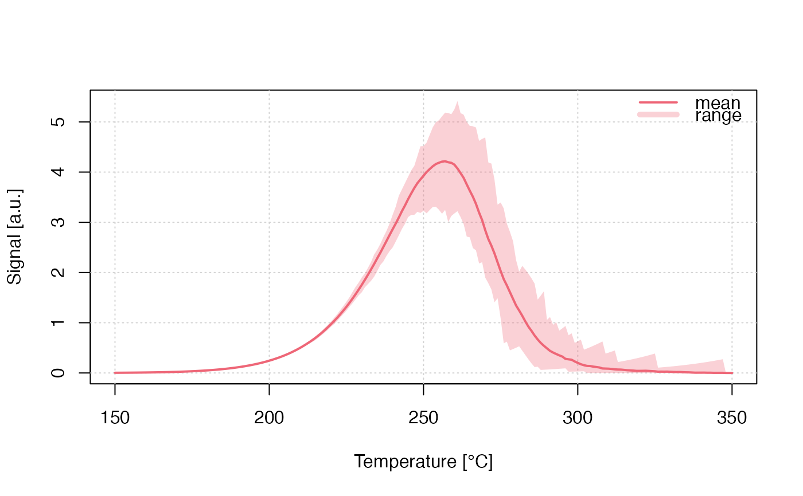

Run Monte-Carlo Simulation for TL (delocalized transitions)
Source:R/run_MC_TL_DELOC.R
run_MC_TL_DELOC.RdRuns a Monte-Carlo (MC) simulation of thermoluminescence (TL) using the one trap one recombination centre (OTOR) model. Delocalised refers to involvement of the conduction band. The heating rate in this function is assumed to be 1 K/s.
Usage
run_MC_TL_DELOC(
s,
E,
times,
b = 1,
clusters = 10,
N_e = 200,
n_filled = N_e,
R = 1,
method = "par",
output = "signal",
...
)Arguments
- s
numeric (required): The frequency factor of the trap (s^-1)
- E
numeric (required): Thermal activation energy of the trap (eV)
- times
numeric (required): The sequence of temperature steps within the simulation (s). The default heating rate is set to 1 K/s. The final temperature is
max(times) * b- b
numeric (with default): the heating rate in K/s
- clusters
numeric (with default): The number of created clusters for the MC runs. The input can be the output of create_ClusterSystem. In that case
n_filledindicate absolute numbers of a system.- N_e
integer (with default): The total number of electron traps available (dimensionless). Can be a vector of
length(clusters), shorter values are recycled.- n_filled
integer (with default): The number of filled electron traps at the beginning of the simulation (dimensionless). Can be a vector of
length(clusters), shorter values are recycled.- R
numeric (with default): Re-trapping ratio for delocalized transitions
- method
character (with default): Sequential
'seq'or parallel'par'processing. In the parallel mode the function tries to run the simulation on multiple CPU cores (if available) with a positive effect on the computation time.- output
character (with default): output is either the
'signal'(the default) or'remaining_e'(the remaining charges/electrons in the trap)- ...
further arguments, such as
coresto control the number of used CPU cores orverboseto silence the terminal
Value
This function returns an object of class RLumCarlo_Model_Output which
is a list consisting of an array with dimension length(times) x clusters
and a numeric time vector.
Details
The model
$$ I_{DELOC}(t) = -dn/dt = (s*exp(-E/(k_{B}*T))) * (n^2 / (N * R + n(1-R)))) $$
Where in the function:
E := the thermal activation energy (eV)
s := the frequency factor in (s^-1)
t := time (s)
\(k_{B}\) := Boltzmann constant (8.617 x 10^-5 eV K^-1)
T := temperature (°C)
R := Delocalised retrapping ratio
n := n_filled, the instantaneous number of electrons
N := N_e, the total number of electron traps available (dimensionless)
Why times and b instead of temperature?
The parameter to control the temperature is a function of the stimulation
times (the parameter times) and the heating rate (b). Thus, the final temperature
is max(times) * b. For a heating rate (b = 1) the final temperature is max(times).
While this might be a little bit confusing, it also allows you to control the
time resolution of the simulation, i.e. you can simulate more points per second.
How to cite
Kreutzer, S., 2025. run_MC_TL_DELOC(): Run Monte-Carlo Simulation for TL (delocalized transitions). Function version 0.1.0. In: Friedrich, J., Kreutzer, S., Pagonis, V., Schmidt, C., 2025. RLumCarlo: Monte-Carlo Methods for Simulating Luminescence Phenomena. R package version 0.1.10. https://r-lum.github.io/RLumCarlo/
References
Pagonis, V., Friedrich, J., Discher, M., Müller-Kirschbaum, A., Schlosser, V., Kreutzer, S., Chen, R. and Schmidt, C., 2019. Excited state luminescence signals from a random distribution of defects: A new Monte Carlo simulation approach for feldspar. Journal of Luminescence 207, 266–272. doi:10.1016/j.jlumin.2018.11.024
Further reading
Chen, R., McKeever, S.W.S., 1997. Theory of Thermoluminescence and Related Phenomena. WORLD SCIENTIFIC. doi:10.1142/2781
Examples
## the short example
run_MC_TL_DELOC(
s = 3.5e12,
E = 1.45,
R = 0.1,
method = 'seq',
clusters = 100,
times = 150:350) %>%
plot_RLumCarlo(legend = TRUE)

if (FALSE) { # \dontrun{
## the long (meaningful) example
# define your parameters
times <- seq(100, 450, 1)
s <- rep(3.5e12, 4)
E <- rep(1.45, 4)
R <- c(0.7e-6, 1e-6, 0.01, 0.1)
clusters <- 300
N_e <- c(400, 500, 700, 400)
n_filled <- c(400, 500, 300, 70)
method <- "par"
output <- "signal"
col <- c(1, 2, 3, 4) # different colours for the individual curves
plot_uncertainty <- c(TRUE, TRUE, TRUE, TRUE) # do you want to see the uncertainty?
add_TF <- c(FALSE, rep(TRUE, (length(R) - 1)))
# loop to plot different curves into one plot
for (u in 1:length(R)){
results <- run_MC_TL_DELOC(
times=times,
s = s[u],
E = E[u],
clusters = clusters,
N_e = N_e[u],
n_filled = n_filled[u],
R = R[u],
method = method,
output = output)
plot_RLumCarlo(
results,
add = add_TF[u],
legend = FALSE,
col=col[u],
main = " your plot",
ylim=c(0,20))
}
#add your legend with your parameters
legend("topright",
ncol = 5,
cex = 0.55,
bty = "n",
title = "parameters",
legend = c(
paste0("E = ", E),
paste0("s = ", s),
paste0("n_filled = ", n_filled),
paste0("N_e = ", N_e), paste0("R = ", R)),
text.col = col)
} # }